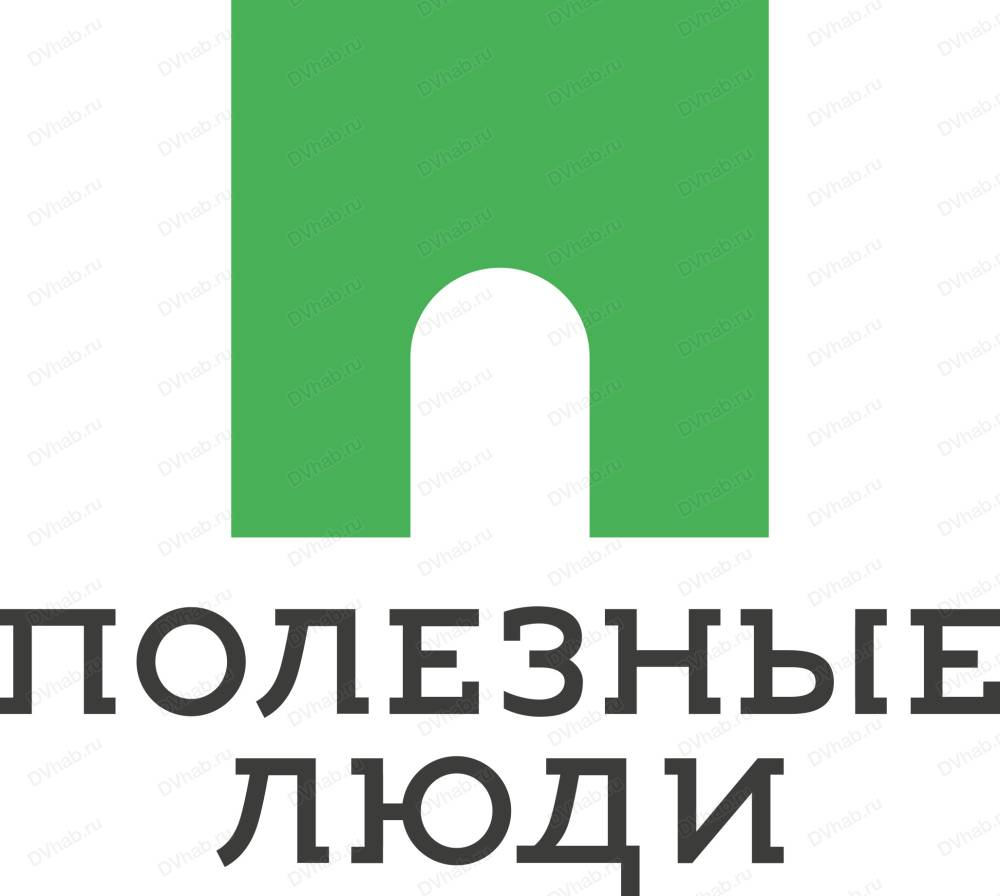
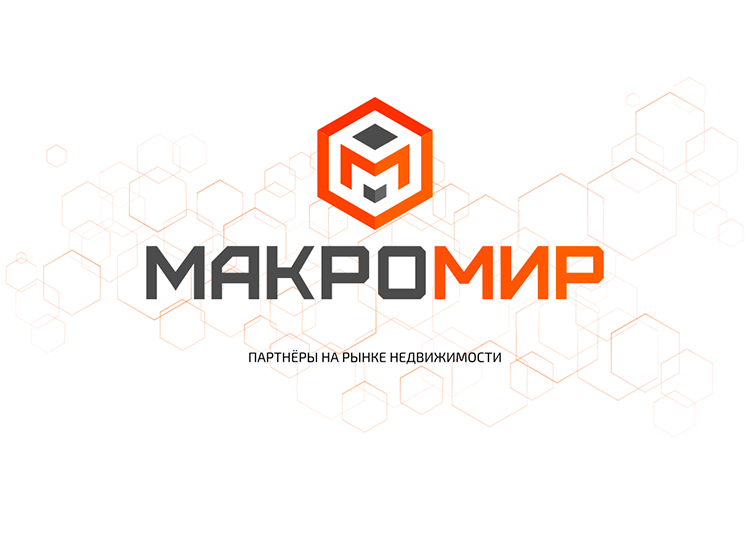
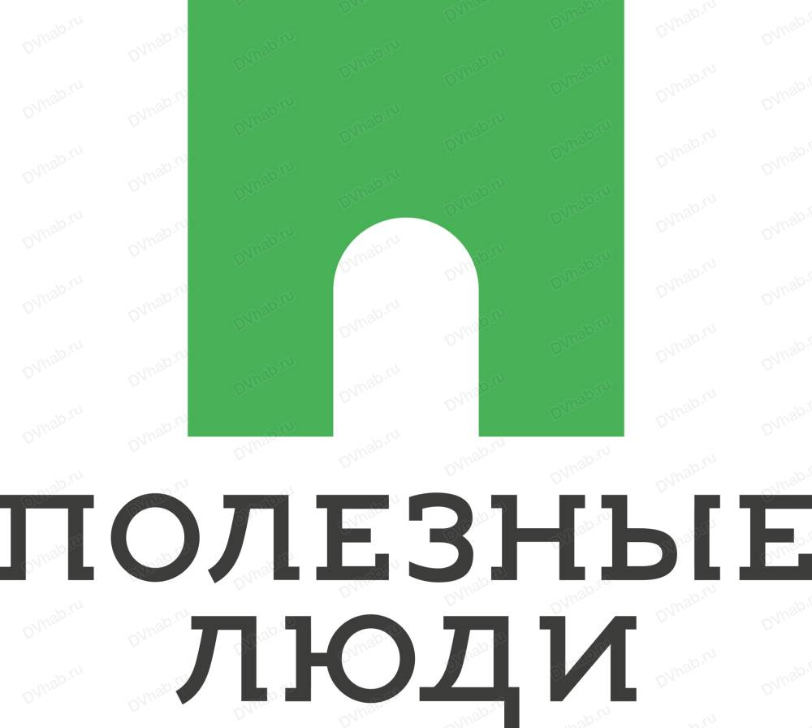
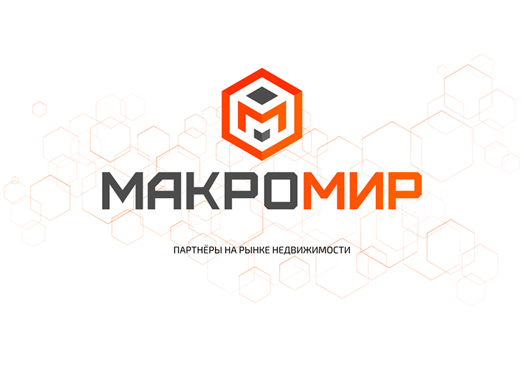

Лучшие агенства недвижимости
Топ-50 агенств недвижимости
Компания "Этажи" на рынке более 21 года, представлена более чем в 170 городах России и в странах СНГ,
штат сотрудников насчитывает более 18 000. Компания является лидирующей в ипотечном кредитовании с 2013-2018
года в Сбербанке и ВТБ.
В 2018 году компания "Этажи" признана агентством недвижимости №1 в России по версии
Сбербанка. Партнерами являются около 1000 застройщиков и банков.
Аренда недвижимости: жилая, коммерческая, Другие услуги: дизайн интерьера, консультации, ремонт,
страхование, строительство, Ипотечное кредитование: ипотека, рефинансирование, Продажа недвижимости:
жилая, загородная, коммерческая
Скидочная система для ипотечного решения по ставкам от 0,5% до 1%;
«Этажи» отвечают собственными средствами за безопасность сделки и возвращают клиенту всю сумму сделки в случае утери прав на недвижимость;
Юристы компании сопровождают сделки клиентов с момента подачи заявки и оказывают бесплатную помощь после покупки недвижимости;
Наличие сети представительств компании по всей России позволяет совершить безопасную межрегиональную или сложную сделку.
Компания "Макромир" предлагает продавцам и покупателям только
опытных и проверенных исполнителей для решения вопросов связанных
с недвижимостью, а агентам - сервис для эффективной работы на рынке
недвижимости, 100% комиссии с каждой сделки, доступ к базе новостроек
и всем преференциям компании.
Сервис MMIR.PRO помогает риэлторам быстро и качественно выполнять свою работу, а клиентам рынка – продавцам и покупателям – быть уверенными в нанятых исполнителях.
На портале размещены проверенные компанией «Макромир» риэлторы. Вы можете найти исполнителя для того, чтобы решить вопрос, связанный с арендой, покупкой или продажей недвижимости, основываясь на открыто предоставленной информации
Мы гарантируем правдивость и достоверность данных, обслуживая всех представленных на портале риэлторов в офисах компании «Макромир», которые расположены в различных городах России.
Агентство недвижимости «Владис» сегодня — это четыре удобно
расположенных, современных офиса в городе Владимир, широчайший
ассортимент услуг в сфере недвижимости, способный удовлетворить любые
запросы наших клиентов, передовые технологии в сфере продаж, 100%
страхование всех рисков. Наличие широкого круга партнеров позволяет
нашим Клиентам получать максимальную пользу от сотрудничества с нами
и экономить свое время.